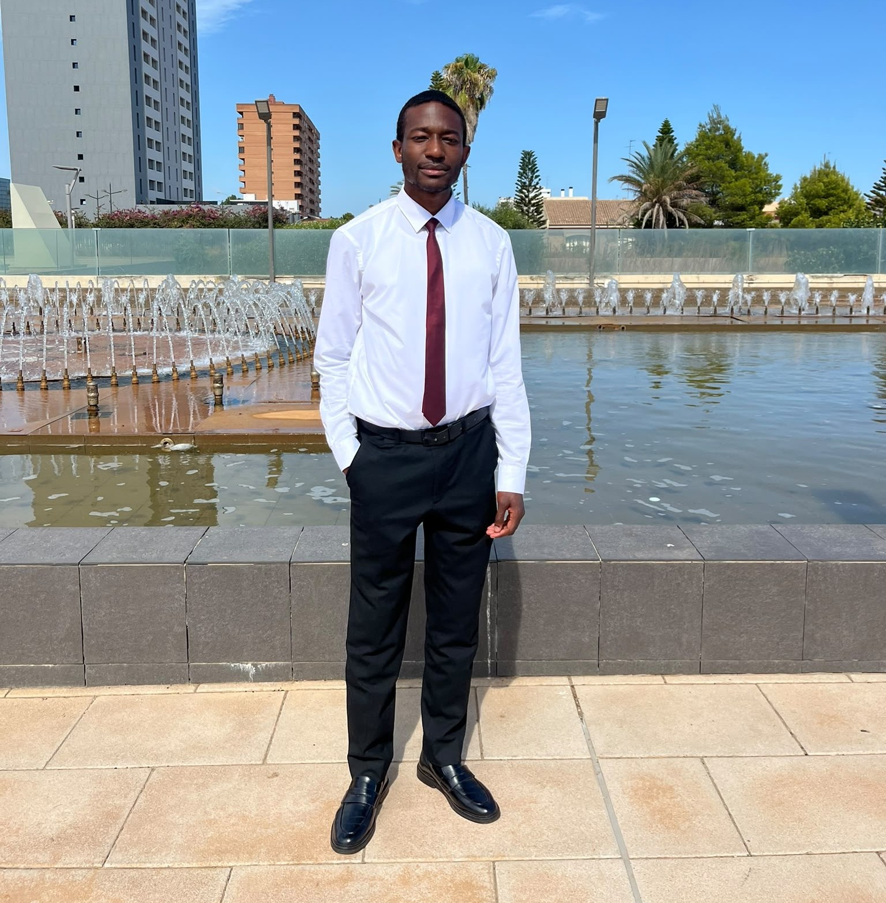

I'm Yohance. I grew up in a Christian home and always believed in God, yet it was only the recent couple of years that I transitioned from being an admirer to wanting to follow the footsteps of Christ. I'm also interested in physical health, studying cancer biology and immunology at university, and spending much of my time reading nutrition books, trying to improve my diet.
I'm very interested in understanding the association between physical health and spiritual health, and how spiritual problems can manifest physically. In Luke chapter 13, after healing a woman who had a ‘spirit of infirmity’ which prevented her from being able to straighten her back, Jesus said, “ought not this woman, being a daughter of Abraham, whom Satan hath bound, lo, these eighteen years, be loosed from this bond on the sabbath day?” (Luke 13:16). This is a clear indicator that physical sicknesses are often a manifestation of spiritual problems. I'm keen to discover this connection.
If you're interested in deepening your walk with Christ, learning of the interactions between spiritual and physical health, or just interested in nutrition, you can find things here to interest you. It was my own personal challenges with health that revealed just how tangible the spiritual world is and made me want to study in more detail. My prayer is that this page will inspire you to walk in Jesus’s footsteps.
Say hello
If you're interested in Bible studies please feel free to contact me.